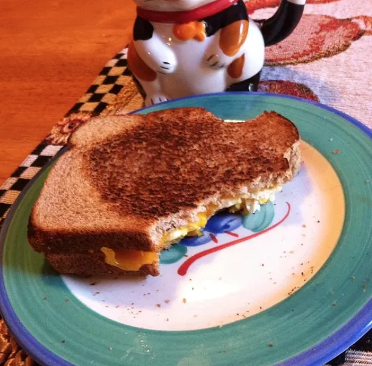

Campfire Sandwich

Description
It couldn't be easier to make this sandwich with just bread,
eggs, butter, and Cheddar cheese. The simple breakfast comes
together in less than 10 minutes.
Ingredients
- 2 tablespoons butter
- 2 slices of bread
- 1 egg
- 1 slice Cheddar cheese
Steps
- Place a Hobo Pie toaster in the hot coals of a campfire to heat for a few mins.
- Butter both slices of bread, then place one slice, butter-side down into the toaster.
Crack the egg onto the bread, and break the yolk. Top with a slice of cheese and the
second slice of bread, butter-side up.
- Close the toaster and place into the coals of the fire. Cook for several minutes,
turning frequently, until the bread has browned nicely on both sides.